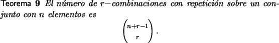

Distribución de objetos indistinguibles
El problema de distribuir r objetos indistinguibles en n celdas,
r  n, con a lo sumo un objeto en cada celda es básicamente directo, ya que
puede reducirse al problema de escoger r entre las n celdas, es
decir
n, con a lo sumo un objeto en cada celda es básicamente directo, ya que
puede reducirse al problema de escoger r entre las n celdas, es
decir


 .
.
El problema de poner r objetos en n celdas donde no hay restricción en el número de objetos en cada celda es ligeramente diferente. Una manera de abordarlo que resulta sencilla es la siguiente: dados los r objetos, una manera de ubicarlos en las celdas es intercalar entre ellos n - 1 banderillas, los objetos antes de la primer banderilla, pueden ser ninguno, corresponden a la primera celda, los objetos entre la primera y segunda corresponden a los objetos en la segunda celda y así sucesivamente. En otras palabras el número de maneras de colocar r objetos indistinguibles en n celdas es:
| (2.4) |
Usando adecuadamente esta última forma se obtiene el siguiente teorema:

Ejemplo 10
Si n personas se colocan aleatoriamente en n oficinas, ¿cuál es la probabilidad de que quede exactamente una oficina vacía?
Solución
El total de posibles ubicaciones de las n personas es nn, pero para que exactamente una oficina quede vacía el análisis debe ser cuidadoso. Se debe elegir una oficina para que quede vacía lo cual puede hacerse de n formas. Luego debe elegirse otra para que quede con dos personas; esta puede elegirse de n - 1 maneras. Una vez hecho esto se eligen dos personas para la segunda oficina y las restantes se ubican una en cada una de las n - 2 oficinas restantes. Luego la probabilidad pedida es:
Ejemplo 11
Si un arreglo binario de doce elementos contiene 8 unos y 4 ceros, ¿cuál es la probabilidad de que los cuatro ceros queden juntos?
Solución
Solo hay 9 arreglos en los cuales los cuatro ceros quedan juntos, y el número de posibles arreglos es 12!/(4!8!), luego la probabilidad pedida es:
Ejemplo 12
En un grupo de probabilidad hay inscritas n parejas (hombre, mujer) para hacer una tarea. El profesor decide separar todas las parejas y formar nuevamente n parejas, pero en forma totalmente aleatoria. ¿Cuál es la probabilidad de que se formen las mismas parejas originales? ¿Cuál es la probabilidad de que se formen sólo parejas (hombre, mujer)?
Solución
Para que se formen las mismas parejas originales solo se necesita calcular cuál es el número total de parejas que se pueden formar. Si se calcula este total de parejas como el número de permutaciones de las 2n personas se tiene un conteo redundante en los dos sentidos siguientes. Primero este conteo está tomando en cuenta el orden en que las n parejas quedan agrupadas y segundo este conteo está tomando en cuenta el orden en que se ubica cada pareja, por lo tanto el número de posibles parejas es
La probabilidad solicitada en la primera parte es el inverso de este número.
La segunda probabilidad pedida puede resolverse usando el mismo esquema anterior, y se puede razonar así. Si los hombres están fijos en las posiciones 1, 3, 5,..., las mujeres se pueden ubicar en n! formas lo cual da todas las posibles maneras de hacer parejas. Luego la probabilidad pedida es: